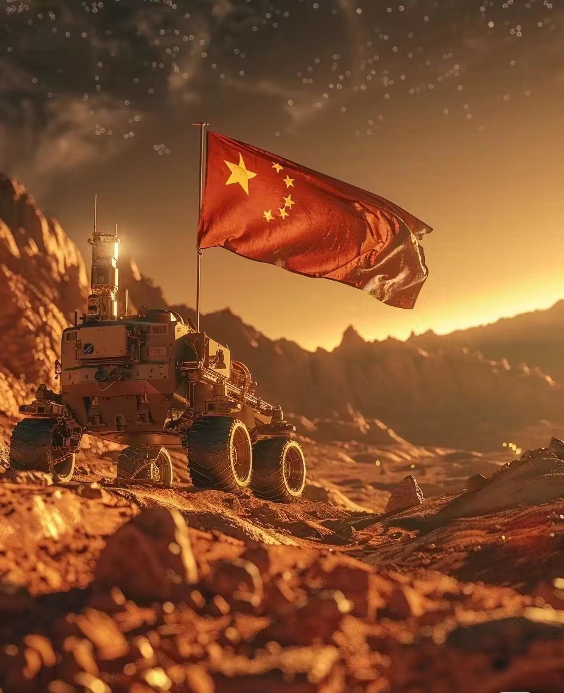

明朝火箭专家万户自制47个火器绑在椅子上，飞向天空，成为"世界航天第一人"。月球上一座环形山命名为" Wan Hoo "。从古至今，不变的是中国人对飞天梦圆的执着。
中国航天事业起始于1956年。中国于1970年4月24日发射第一颗人造地球卫星，是继苏联、美国、法国、日本之后世界上第5个能独立发射人造卫星的国家。
中国发展航天事业的宗旨是：探索外太空，扩展对地球和宇宙的认识；和平利用外太空，促进人类文明和社会进步，造福全人类；满足经济建设、科技发展、国家安全和社会进步等方面的需求，提高全民科学素质，维护国家权益，增强综合国力。中国发展航天事业贯彻国家科技事业发展的指导方针，即自主创新、重点跨越、支撑发展、引领未来。
2021年6月17日9时22分，中国神舟十二号载人飞船发射，飞行乘组由航天员聂海胜、刘伯明和汤洪波三人组成。 [14-15]10月17日，航天发射次数一年内“首次突破40次”。 [19]2021年执行了55次发射任务，数量位居世界第一。 [27]12月13日，“2021年度中国媒体十大流行语”发布。“中国航天”在其中 。
2024年，中国载人航天工程将统筹推进空间站应用与发展和载人月球探测两大任务 [163]；4月，中国载人航天工程新闻发言人、中国载人航天工程办公室副主任林西强表示：将抓紧研究推动国外航天员以及太空游客参与空间站飞行 [175]；5月21日12时15分，我国成功发射武汉一号卫星、超低轨技术试验卫星等4颗卫星。 [189]6月22日，搭载中法天文卫星的长征二号丙运载火箭在中国西昌卫星发射中心发射升空。
从无人到载人，从一人到多人，从舱内到舱外，如今"敢上九天揽月"已成为现实，一个个"首次"不断刷新中国人在太空的印记，一次次腾飞见证我国从航天大国迈向航天强国的奋进足迹。